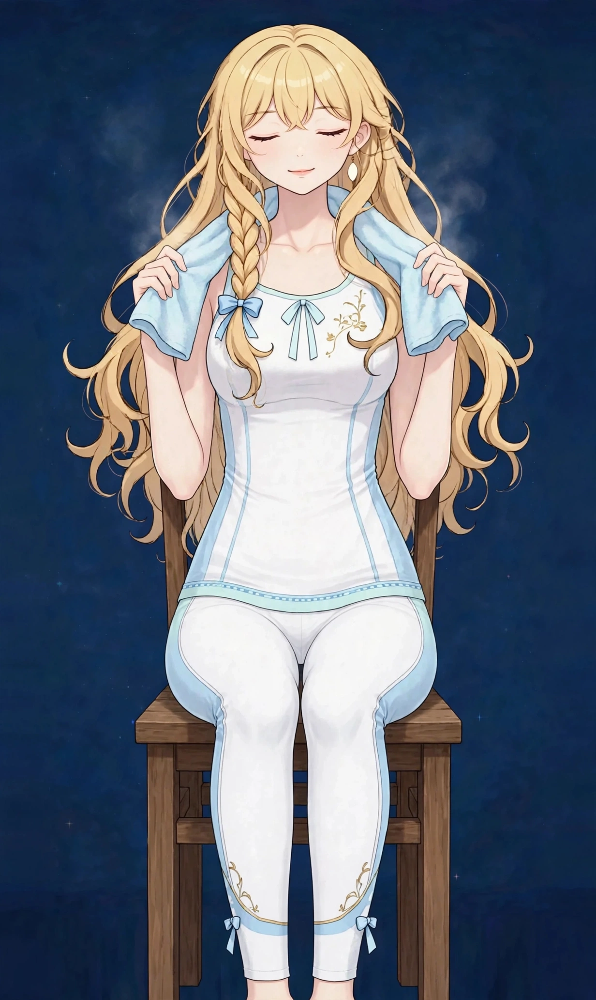

梅田で季節の変わり目の不調感ケア｜季節の境目に揺らぐ体に心身・女性特有

春先、秋口、梅雨入り——季節が動く境目になると、決まって体の調子が揺らぐ方がいます。肩の力み、胸のつかえ、お腹の張り感、眠りの浅さ。はっきりした病気ではないけれど「なんとなく安定しない」感覚が、季節の変わり目の不調感です。
季節の変わり目の不調感はどんな状態か
季節の変わり目の不調感は、気温・湿度・日照時間の変化に体が順応しようとする過程で、巡りやリズムが乱れて表れる漠然とした不調です。出方は人それぞれで、肩の力みとして出る方、眠りの浅さとして出る方、胃腸の重さとして出る方がいます。
ポイントは、「境目の数週間だけ」繰り返し表れることです。毎年同じ季節に同じような不調が出る方は、体質的な弱さというより「変化への順応に時間がかかる体」として捉えることができます。境目を上手に乗り切るための備えと、その時期のリセットが大切になります。
こんなサインはありませんか？ — 季節の変わり目の不調感のチェックリスト
- 毎年、同じ季節の境目に調子が揺らぐ
- 肩に力が入りやすく、胸がつかえる感じがある
- 眠りが浅くなり、朝すっきりしない
- お腹の張りや食欲のむらが出やすい
- 頭が重く、集中しにくい日が増える
- 寒暖差の大きい日に特に不調を感じる
- 不調が続くと気分まで不安定になる
- 季節が落ち着くと自然と楽になる
当てはまる項目が多いほど、負担がたまりやすい生活が続いている可能性があります。次の「要因」と見比べて、どこに負担が集まっているか確かめてみてください。
季節の変わり目の不調感につながりやすい要因
- 気温の寒暖差：一日の気温差や日ごとの変動が大きい時期は、体が調整に追われます。薄着と厚着の境目の服装の失敗も、不調の引き金になります。
- 湿度と気圧の変化：梅雨入りや秋雨の時期など、湿度と気圧が動く境目は、巡りが滞りやすくなります。雨の日の重さと重なる部分です。
- 日照時間の変化：日の長さが変わる時期は、眠りのリズムや気分の安定に影響します。春先の眠気や、秋口の眠りの浅さはこの要素も関係します。
- 花粉や空気の変化：春先は花粉など空気の変化も重なります。目や鼻の不調と一緒に、全身の重だるさを感じる方も多くいらっしゃいます。
- 生活行事の重なり：年度替わりや連休など、季節の境目は生活の変化も重なる時期です。環境の変化が体の負担として蓄積します。
- 衣服と冷暖房の切り替え：冷房や暖房の使い始めの時期は、体が冷えと温かさの両方にさらされます。境目特有の冷えが、巡りを乱す一因になります。
図1｜季節の境目に不調を感じやすい部位

東洋医学から見た考え方
東洋医学では、体は季節とともに巡りを変えるものと捉えます。季節の境目は、その切り替えがうまくいかないと不調として表れやすい時期と考えます。五臓の見立てでは、春は肝、梅雨は脾といったように、季節ごとに負担のかかりやすい場所が変わるとされます。
手首の内側を通る心包経や、胸まわりの巡りに関わるラインを意識し、施術では肩・胸・お腹まわりを含めた全身のバランスを整えます。境目の時期こそ、巡りを一巡させるケアが向いています。
代表的なツボ
季節の変わり目のケアでよく挙げられるツボを紹介します。胸のつかえや力みを感じるときに、手の届きやすい場所を中心に選んでいます。
図2｜季節の変わり目のケアで挙げられるツボ

おすすめ施術
オイルマッサージ
全身の巡りを一巡させるようにほぐし、季節の境目で乱れたバランスを整えることを目指します。肩の力みや胸まわり、お腹まわりまで含めた全体のケアです。
進め方は、背中と肩の力みをほぐすところから始め、手先・足先まで巡らせる流れです。当日の不調の出方をお聞きし、重点を置く場所を調整します。
毎年境目に不調が出る方は、その時期に合わせて「境目の前に整える」使い方もおすすめです。季節のカレンダーに組み込めるケアとしてご検討ください。
境目の不調は、「今年もこの時期が来た」と感じる方ほど、備えが効果を発揮します。昨年の不調の出方をメモしておくと、今年の対策を立てる材料になります。施術の際にも、その記録をもとに重点を相談できます。
自宅でできるセルフケア
季節の変わり目のセルフケアは「服装で調整する・眠りを整える・温める」の組み合わせが基本です。不調が長く続く場合や、日常生活に支障が出るほど強い場合は、医療機関にご相談ください。
- 1．重ね着の調整境目の時期は脱ぎ着できる服装で寒暖差に対応します。冷えを我慢しないことが、巡りを乱さない基本です。
- 2．内関のセルフ押し胸のつかえを感じたら、手首の内関を呼吸に合わせて5回押します。電車の中でも行いやすいケアです。
- 3．就寝時刻の固定境目の時期ほど、眠る時刻をそろえることがリズムの助けになります。休日も平日との差を小さく保ちます。
- 4．旬の食材を取り入れる季節の境目の食事は、その季節の旬のものを意識します。温かい汁物を添えることも、内側から整える工夫です。
図3｜セルフケア「内関のセルフ押し」の手順
場面別の注意
春先（3〜4月）
年度替わりの環境変化と花粉の時期が重なります。予定を詰め込みすぎず、眠りのリズムを守ることが乗り切り方です。
梅雨入り（6月）
湿の影響で重さが出やすい時期です。除湿と湯船の習慣で、体の水の巡りを助けてください。
秋口（9〜10月）
夏の疲れが出やすい時期と重なります。冷房冷えの残りにも注意し、温めるケアを早めに取り入れてください。
受診の目安
次のような場合は、サロンでのケアの前に医療機関への受診をおすすめします。
- 不調が季節を越えて続くようになってきた
- 体重の急な増減や、発熱を伴っている
- 気分の落ち込みが強く、日常生活に支障が出ている
- 動悸や息切れが頻繁にある
- 眠れない日が続き、日中の眠気が強い
当店は医療機関ではなく、診断は行いません。迷うときは、まずかかりつけの医療機関にご相談ください。
よくある質問
Q．自律神経の乱れ感のページとの違いは？
自律神経の乱れ感のページは緊張の抜けにくさ全般を、このページは季節の境目という時期に絞って解説しています。毎年同じ時期に繰り返す方は、こちらのページが合います。
Q．境目の前に通うのがいいですか、境目の最中ですか？
どちらも可能です。繰り返す自覚がある方は境目の少し前に整えておく使い方、不調が出てからリセットする使い方の両方があります。ご自身のパターンに合わせてご相談ください。
Q．漢方などは扱っていますか？
当店は施術のサロンで、医薬品の扱いはありません。体の外側からのケアと、生活習慣の工夫の範囲でサポートします。
Q．毎年つらいので、定期的に通えますか？
はい。季節の境目に合わせた間隔でのご利用も歓迎しています。次回の目安は施術の際に一緒に相談できます。
関連するお悩みページ
関連する経絡ページ
ご予約
ステラポラリス（大阪・梅田／女性専用）｜オイルマッサージ 90分 10,000円｜月〜土 17:00〜22:00・完全予約制
ご予約はLINE公式アカウントで受け付けています。希望の日時と、気になる場所を送ってください。